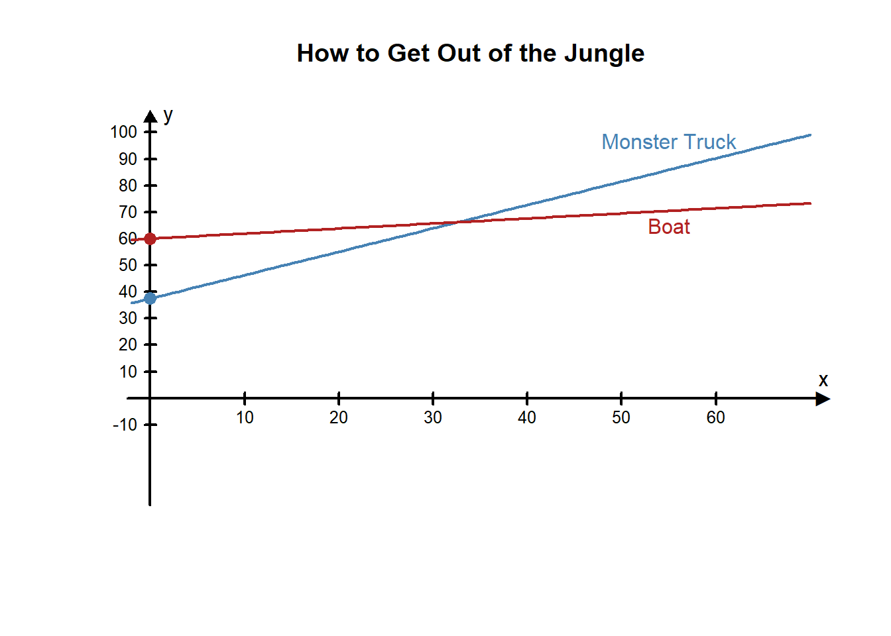
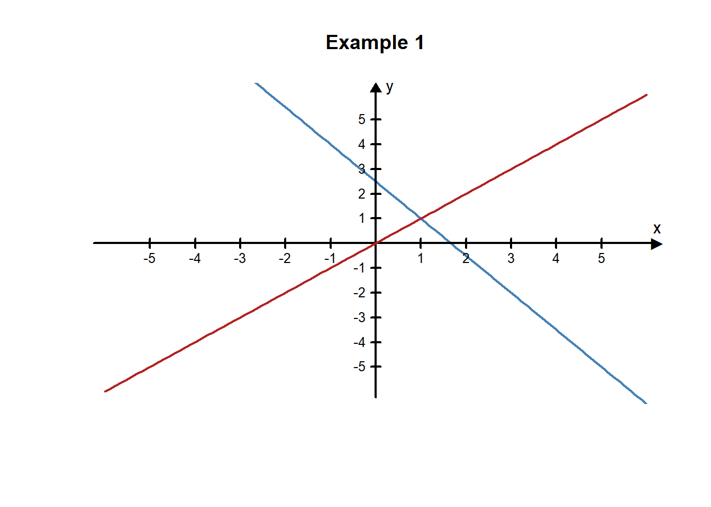
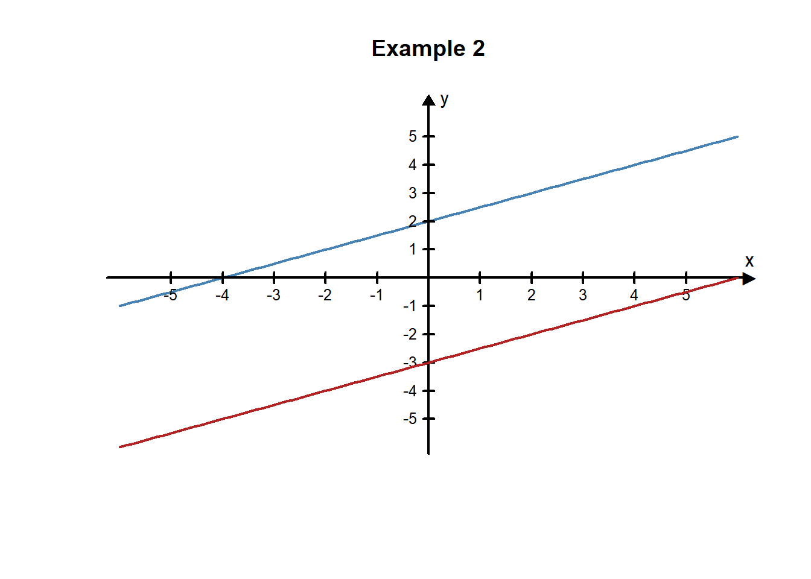
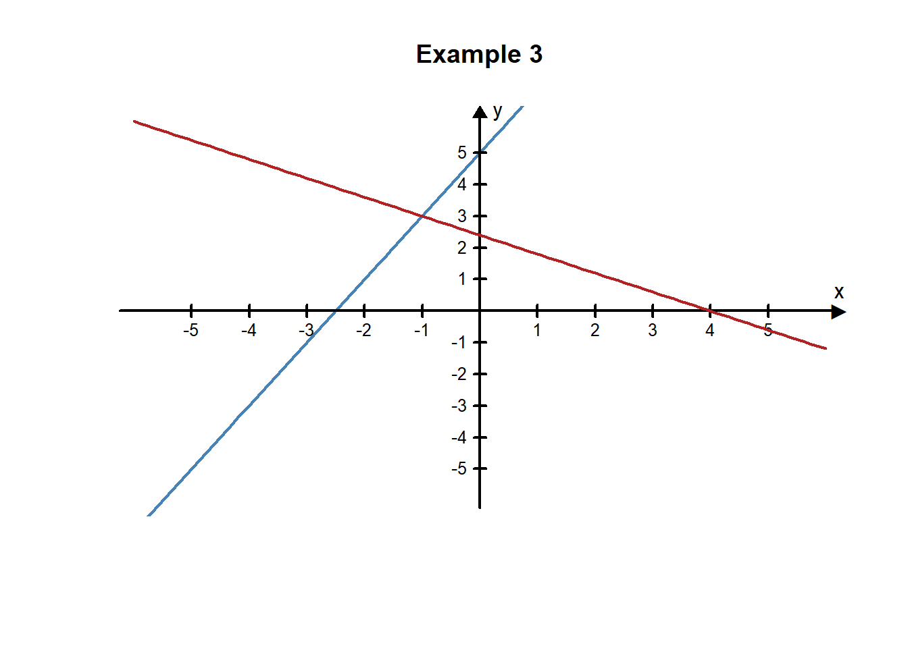
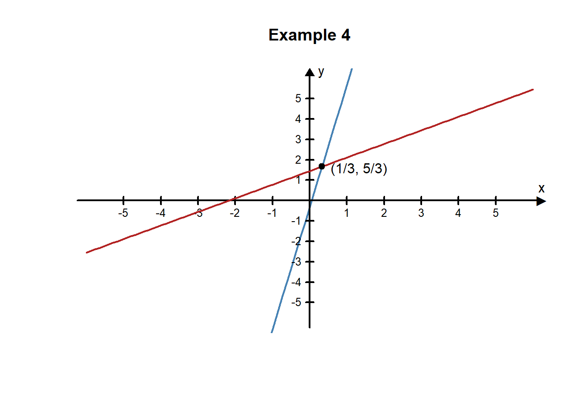
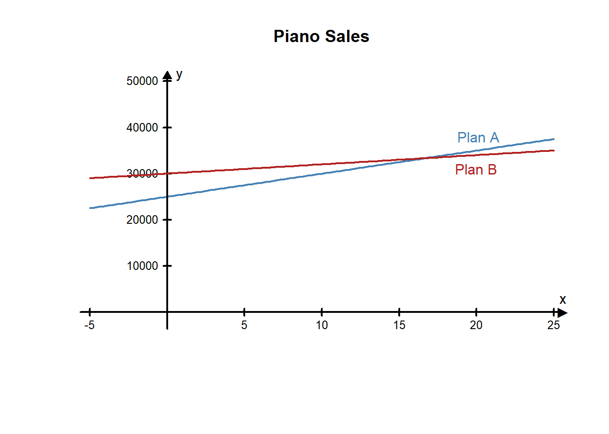
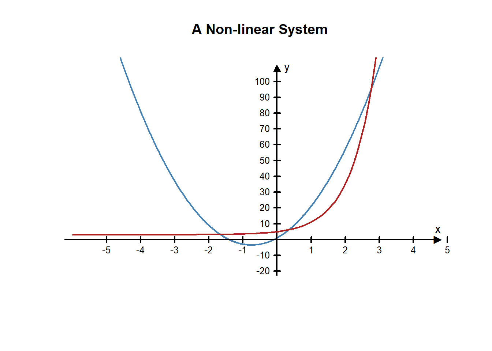

Lesson 11 - Opening story
(1:03
mins, L11 Opening Story Transcript)
Sophia and Emmy need to make a decision where they must compare two options. We often face situations with different options where we can use the Quantitative Reasoning Process to compare our options. There are several different quantitative tools we can use to make this type of comparison. One tool we look at in this lesson is a system of equations.
A system of equations is a list of two or more equations that use the same input and output variables.
We can use graphs or algebra to solve for the values of the variables that satisfy both equations. Let’s start by looking at how Sophia and Emmy use a system of equations to decide between renting the monster truck or renting the boat.
Sophia and Emmy need to find a way back to their hotel from the jungle. They are faced with a decision where they need to compare the cost of two different things, renting the monster truck or renting the motor boat.
We identify the following variables:
We can use the following assumptions:
We can set up two equations that are related to each other because the variables are the same in both cases: the total cost of transportation out of the jungle and the number of kilometers. With either the monster truck or the motor boat we are focused on money and distance.
We can model each scenario with a mathematical equation.
The total cost, \(y\), of the truck
is $37.50 + $0.88 \(\times\)
kilometers: \(y=37.50+0.88x\)
The total cost, \(y\), of the boat is
$60.00 +$0.19 \(\times\) kilometers:
\(y=60+0.19x\)
The input value, \(x\), in each of the equations is the number of kilometers they travel. The output value \(y\), is the total cost of transportation.
As we learned in Chapter 7 the two equations in this example are linear equations. The rate of change (or slope) in each equation is constant. When we plot this type equation we get a straight line.
Let’s look more carefully at the graph of the two lines representing the situation. The blue line represents the cost of the monster truck as the kilometers increase. The red line represents the cost of the boat as the kilometers increase.

We can see from the graph that the two lines cross at around 33 kilometers on the \(x\)-axis and just above $65 on the \(y\)-axis.
If Sophia and Emmy travel less than 33 kilometers then the truck is the least expensive. If they travel more than 33 kilometers then the boat is the least expensive.
Sophia and Emmy need more information to make an informed decision. They really need to know the distance from their jungle position back to town.
After asking for more information, they find that the dirt road back to the hotel is about 40 kilometers long and the river trip is 38 kilometers. Use the equations we built to compute the cost of each rental vehicle.
L11 - Interactive 1: Make an Informed Decision
(L11-1
ADA Interactive Transcript)
Sophia and Emmy tie the boat up at the town marina and ask directions to their hotel. After finding out that they have 5 kilometers still to walk they rethink their decision.
Sophia and Emmy have realized that they made an incorrect assumption in their application of the Quantitative Reasoning process. They mistakenly assumed that both modes of transportation would get them back to their hotel. But since they didn’t realize that travel by boat would also require a 5 kilometer walk, they made a decision that didn’t turn out to be the best.
Because the difference in price between the rentals was relatively small, they now wish they had rented the monster truck and driven straight to the hotel.
The remainder of this lesson will focus on the powerful quantitative tool, systems of equations, that we used to understand Sophia and Emmy’s situation.
There are several different techniques that can be used to solve systems of equations. We will look at two of them: solving systems of equations with graphs and solving systems of equations with algebra.
The graph of an equation represents all the points that satisfy the equation. When we are solving a system of equations we want to find a point that satisfies all of the equations in the system. This means that if you graph both equations in a system of two equations on a graph you can find the solution to the system by finding all points where the graphs intersect. An intersection point satisfies both equations so it represents the solution we are looking for.
Graph the following two equations to solve the system of equations:
\[ \begin{align} 3x+2y&=5\\ x-y&=0\\ \end{align} \] Solution
We want to find a point \((x,y)\) that satisfies both equations. This means the point we are looking for will be the point where the two graphs intersect. If we solve each equation for \(y\), we will see that they fit the pattern of a linear function and we will be able to graph the lines.
Equation 1: \[ \begin{align} 3x+2y&=5\\ 2y&=-3x+5\\ y&=\frac{-3}{2}x+\frac{5}{2} \end{align} \] Equation 2:
\[ \begin{align} x-y&=0\\ -y&=-x\\ y&=x\\ \end{align} \]
Equation 1 can be represented with a line with a \(y\)-intercept of \(\frac{5}{2}\) and a slope of \(\frac{-3}{2}\). Equation 2 gives the graph of a line with a \(y\)-intercept of 0 and a slope of 1. If we plot both lines on the same graph, they look like this:

The solution to the system of equations is represented on the graph by the point where the two lines intersect. By looking at the graph of these two lines, we can see that they cross at the point \((1,1)\). This means \(x=1, y=1\) is the solution to the system of equations.
Check Our Answer
We can verify that \(x=1, y=1\) is the solution to the system by checking that \((1,1)\) is exactly the point where they cross. We do this by substituting in these values for \(x\) and \(y\) in both equations and making sure that both mathematical statements are true.
Equation 1:
\[ \begin{align} 3x+2y&=5\\ 3(1)+2(1)&=5\\ 3+2&=5\\ 5&=5\\ \text{True}&\text{ Statement} \end{align} \]
Equation 2:
\[ \begin{align} x-y&=0\\ 1-1&=0\\ 0&=0\\ \text{True}&\text{ Statement} \end{align} \]
The point \((1,1)\) is the only point where the two lines cross, and the values \(x=1\) and \(y=1\) are the only values for \(x\) and \(y\) that will yield true statements for both equations. When we get a single unique solution like this, we say that the system of equations is independent.
Graph the following two equations to solve the system of equations:
\[ \begin{align} -x+2y&=4\\ -3x+6y&=-18\\ \end{align} \]
Solution
If we solve each equation for \(y\), we can see that each one fits the pattern of a linear function and can graph the lines.
Equation 1:
\[ \begin{align} -x+2y&=4\\ 2y&=x+4\\ y&=\frac{x+4}{2}\\ y&=\frac{1}{2}x+\frac{4}{2}\\ y&=\frac{1}{2}x+2\\ \end{align} \] The first equation can be graphed as a line with a slope of 1/2 and a \(y\)-intercept of 2.
Equation 2:
\[ \begin{align} -3x+6y&=-18\\ 6y&=3x-18\\ y&=\frac{3x-18}{6}\\ y&=\frac{3}{6}x-\frac{18}{6}\\ y&=\frac{1}{2}x-3\\ \end{align} \]
The second equation can be graphed as a line with a slope of 1/2 and a \(y\)-intercept of -3.
If we plot both lines on the same graph, they look like this:

From the graph it looks like the lines are parallel, which means they will never cross. We can see from the equations that the lines are parallel because the two lines have the same slope. This means that there is no \(x,y\) pair that will satisfy both equations and thus there is no solution to this system of linear equations. When there is no solution to a system of equations we say that the system of equations is inconsistent.
L11 - Interactive 2: Example 2
(L11-2
ADA Interactive Transcript)
Graphing systems of equations helps us to visualize the system and the solutions but unless the equations and solutions are fairly simple it can be difficult to obtain accurate results. We can also solve systems of equations using techniques of algebra. The Substitution Method is one way to solve a system of equations. To solve a system of equations using the substitution method we eliminate one variable from one of the equations by substituting an expression for that variable from the other equation.
Use the substitution method to solve the system of equations:
\[ \begin{align} 2x-y&=-5\\ 3x+5y&=12\\ \end{align} \]
Solution
To solve this system using the substitution method, we first solve the first equation for \(y\):
\[ \begin{align} 2x-y&=-5\\ -y&=-2x-5\\ y&=2x+5\\ \end{align} \]
Now, we substitute the expression \(2x+5\) in for the \(y\) in the other equation:
\[ \begin{align} 3x+5y&=12\\ 3x+5(2x+5)&=12\\ \end{align} \]
Because we have an equation with only \(x\)’s in it, we can solve for \(x\):
\[ \begin{align} 3x+5(2x+5)&=12\\ 3x+10x+25&=12\\ 13x+25&=12\\ 13x&=12-25\\ 13x&=-13\\ x&=\frac{-13}{13}\\ x&=-1\\ \end{align} \] We know \(x=-1\) so we can substitute this value for the \(x\) in the \(y\)-expression we found earlier, \(y=2x+5\):
\[ \begin{align} y&=2x+5\\ y&=2(-1)+5\\ y&=-2+5\\ y&=3 \end{align} \]
We have found the solution to this system of equations to be \(x=-1, y=3\). Because there is a single solution to this system of equations, it is independent. The graph of these two equations verifies this solution because the lines intersect at the point \((-1,3)\).

Use the substitution method to solve the system of equations:
\[ \begin{align} 6x-9y&=-13\\ 18x-3y&=1\\ \end{align} \] Solution
We need to solve for one of the variables in one of the equations. We will solve for \(y\) in the second equation:
\[ \begin{align} 18x-3y&=1\\ -3y&=-18x+1\\ y&=\frac{-18x+1}{-3}\\ y&=\frac{-18}{-3}x+\frac{1}{-3}\\ y&=6x-\frac{1}{3} \end{align} \] Now that we know \(y\) in terms of \(x\), we can substitute this into the first equation:
\[ \begin{align} 6x-9y&=-13\\ 6x-9(6x-\frac{1}{3})&=-13\\ 6x-54x+\frac{9}{3}&=-13\\ -48x+3&=-13\\ -48x&=-13-3\\ -48x&=-16\\ x&=\frac{-16}{-48}\\ x&=\frac{1}{3}\\ \end{align} \]
We can now substitute \(\frac{1}{3}\) in for \(x\) in any of the equations to find \(y\):
\[ \begin{align} y&=6x-\frac{1}{3}\\ y&=6(\frac{1}{3})-\frac{1}{3}\\ y&=\frac{6}{3}-\frac{1}{3}\\ y&=\frac{6-1}{3}\\ y&=\frac{5}{3}\\ \end{align} \]
This system of equations is independent. The only solution that works for both equations is \(x=\frac{1}{3}, y=\frac{5}{3}\). The two lines cross at the point \(\big(\frac{1}{3},\frac{5}{3}\big)\).

L11 - Interactive 3: Practice Solving a System
(L11-3
ADA Interactive Transcript)
Jasper loves music and has recently been hired as a piano salesman. His new boss asked him to choose a commission plan. He can choose Plan A or Plan B. For Plan A Jasper gets a base salary of $25,000 a year plus a $500 commission for each piano he sells. In Plan B Jasper gets a base salary of $30,000 a year plus a $200 commission for each piano.
Jasper identifies two variables:
Because Plan A and Plan B have the same two variables, Jasper can model his situation using a system of equations to better understand the decision he needs to make.
This can be turned into the following system of equations where the input variable, \(x\), represents the number of pianos Jasper sells in a year and the output variable, \(y\), represents the total amount of money he earns in one year.
\[ \begin{align} y&=500x+25000\\ y&=200x+30000\\ \end{align} \]
Because both equations are already solved for \(y\) we can substitute \(200x+30000\) in for \(y\) in the first equation and solve for \(x\):
\[ \begin{align} 200x+30000&=500x+25000\\ 200x-500x&=25000-30000\\ -300x&=-5000\\ x&=\frac{-5000}{-300}\\ x&=16.67\\ \end{align} \] We can now substitute \(x=16.67\) into any of the equations to find \(y\):
\[ \begin{align} y&=500x+25000\\ y&=500(16.67)+25000\\ y&=33335\\ \end{align} \]
The solution to the system is \(x=16.67, y=\$33,335\).
The following graph of this system supports this solution:

From this solution, Jasper knows if he sells around 16 or 17 pianos the two plans pay about the same and he would make around $33,335 per year. If he sells more than 16 pianos, Plan A is a better plan because he earns more money in a year. If he sells 16 pianos or fewer, Plan B is a better plan.
He believes he can sell at least 2 pianos per month. Since this a total of 24 pianos he decides to select Plan A.
Before telling his boss his decision, Jasper decides to ask some of the other salesman how many pianos they sold the previous year. He talks to three of them and finds that they sold 18, 31, and 22 pianos each. Because these values are all more than 17, Jasper is satisfied with his decision to chose Plan A and tells his boss of his decision.
L11 - Interactive 4: Practice Solving in Context
(L11-4
ADA Interactive Transcript)
Often, the equations that make up a system of equations are obtained from data using a trendline. The following example looks at an example from business: the break-even point.
Jeff and Lucas opened a pizzeria. They have been open for 10 months now and are doing some calculations to determine what they could do to improve their profits. Currently, they charge $10 for the large pizza, their best-selling item. During the 10 months their restaurant has been open, they collected the following data:
They want to answer two questions:
Jeff and Lucas identify the following variables:
They make the following assumptions:
Jeff and Lucas create the following scatter plot and trendlines to compare their revenue and costs. The input variable, \(x\), represents the number of pizzas sold in one month. The output variable, \(y\), represents money. We can see the data and the trendline for both the total revenue (orange) and total cost (blue).
These two trendlines give them a system of equations:
\[ \begin{align} y&=10.893x + 217.7\\ y&=5.8929x + 5803.9\\ \end{align} \]
Jeff and Lucas use substitution to solve the system of equations. Because both equations are already solved for \(y\), they can set the equations equal to each other and solve for \(x\):
\[ \begin{align} 10.893x + 217.7 &= 5.8929 x + 5803.90\\ 10.893x - 5.8929 x &= 5803.90 - 217.7\\ 5.0001x &= 5586.20\\ x&=\frac{5586.20}{5.0001}\\ x&=1117.2177\\ \end{align} \] They can then substitute this value of \(x\) back into any of the equations to solve for \(y\). They used the first equation:
\[ \begin{align} y&=10.893x + 217.7\\ y&=10.893(1117.2177)+217.7\\ y&=12387.5524\\ \end{align} \] The solution to the system of equations is \(x=1117.2177, y=12387.5524\).
Jeff and Lucas know that \(x\) represents the number of pizzas sold and \(y\) represents a dollar amount. This solution means that if Jeff and Lucas sell 1,117 pizzas they will break-even and their revenue and costs will both be about $12,387.55.
These calculations give Jeff and Lucas the answer to their first question: How many pizzas do they need to sell to break even each month? They need to sell around 1,117 pizzas per month. Because they are closed on Sunday, their pizzeria is open for around 26 days per month. They divide the number of pizzas by the number of days and get 42.96. This means they need to sell an average of 43 pizzas every day in order to break even.
Looking back at the data, Jeff and Lucas notice that they sold more than 1,117 pizzas in 5 of the past 10 months: May, June, September, October, and November. They are concerned that they sold fewer than 1,117 pizzas in the other 5 months. But they notice that the most recent three months have had good sales. They hope that this upward trend in pizza sales continues as their pizzeria becomes more popular.
To answer the question of whether they should increase the price of the large pizza, they notice that in the past three months, although they have sold more than 1,117 pizzas their total revenue was not much larger than their total costs. That means their profits were relatively low. They decide to increase the price of the large pizza to $11. They hope the extra revenue will increase their profits.
As Jeff and Lucas evaluate their reasoning, they re-examine their assumptions. One of their assumptions was: “If they change the price of the pizza, the number of pizzas sold will stay the same.” As they think about this assumption, they realize it is probably not very accurate. Reducing prices would probably increase sales, while increasing prices would probably decrease sales. Because their decision was to increase the price of the large pizza to $11, Jeff and Lucas realize they might see a decrease in sales. They decide to try the higher price for three months and then re-evaluate their decision.
After three more months of sales, Jeff and Lucas reevaluate their decision. In those three months they sold 1410, 1511, and 1620 pizzas. So far, it appears that the increase in their prices has not decreased their sales too much. Their sales remain above the 1,117 pizzas they calculated that they needed to sell in order to break even. Because they raised the price of the large pizza they find that their revenue has increased, so their profits are also increasing. Jeff and Lucas decide to do more advertising. They know that if they can sell more pizzas their profits will continue to increase.
So far, all of the systems of equations we have encountered in this lesson have involved linear equations. Linear systems are the most common type of system that appear in real life problems. Because a line is simple, both in a graph and in an equation, we often choose to model situations with lines. This can be especially useful when the solution does not have to be precise, like rounding up to the nearest pizza or the nearest dollar.
However, sometimes situations need more precision or sometimes a line is not a close enough model and it is helpful to use non-linear models. There are ways to solve non-linear systems with algebra, but in this class, we will only solve non-linear systems using graphs.
Here is an example of a non-linear system of equations:
\[ \begin{align} y&=8x^2+12x+1\\ y&=2(4)^x+3\\ \end{align} \]
Notice that the first equation is a quadratic function and the second equation is an exponential function. When we graph these functions we get the following:

Notice there are three solutions to this system of equations because the graphs intersect at three different points. It is difficult to determine the exact location of the intersection points from the graph, but we can tell they are somewhere around the points \((-1.6,3.5)\), \((0.3,6)\), and \((2.8, 95)\).
###Solve a Non-linear System
L11 - Interactive 5: Solve a Non-linear System
(L11-5
ADA Interactive Transcript)
By the end of this lesson, you should be able to: